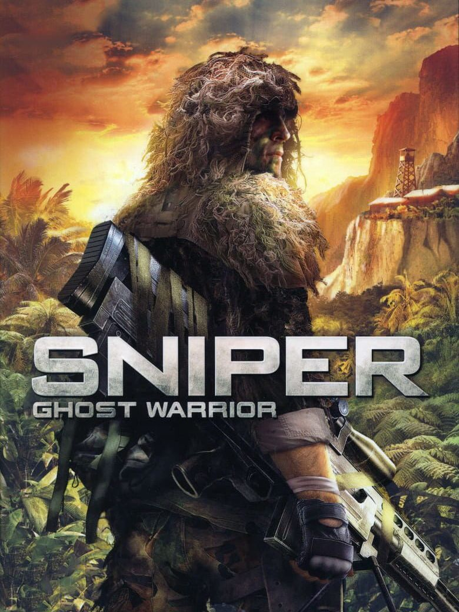

Sniper: Ghost Warrior
Sniper: Ghost Warrior
Details
|  | |
| Playtime | Not Played |
| Last Activity | Never |
| Added | 02/12/2022 9:03:41 |
| Modified | 18/05/2025 0:47:46 |
| Completion Status | Not Played |
| Library | Steam |
| Source | Steam |
| Platform | PC (Windows) |
| Release Date | 24/06/2010 |
| Community Score | 55 |
| Critic Score | 56 |
| User Score | |
| Genre | Shooter Simulator Tactical |
| Developer | City Interactive |
| Publisher | City Interactive CyberFront Corporation |
| Feature | Multiplayer Single Player |
| Links | Steam Official Website |
| Tag | Action Adventure Bullet Time First-Person FPS Military Multiplayer Shooter Simulation Singleplayer Sniper Stealth Tactical War |
Description
When the democratic government of Isla Trueno is overthrown, an aggressive and hostile military command rises to power. A highly trained special ops unit is sent in to help the rebels accomplish objectives that only a sniper can handle. In addition to intense sniper missions, players will also take part in a variety of assault scenarios where their prowess with weapons will be a huge help to the undermanned rebels. Sniper: Ghost Warrior seeks to challenge players in new ways so that the game is both demanding and entertaining.
Developed by City Interactive’s dedicated next-gen games studio, Sniper: Ghost Warrior delivers an impressive visual and technological gaming experience and features a realistic ballistics system that measures bullet trajectory, bullet drop and environmental effects such as wind, fog & rain. Encompassing a wide array of single and multiplayer levels, players will encounter a variety of challenging terrain. Players take on the role of a Ghost Warrior, an elite sniper in a highly trained special ops unit, whose unique skills in the art of stalking, target detection, surveillance and shooting accuracy will determine mission success. Covert missions force players to operate undetected as they attempt to eliminate hostile enemies one head shot at a time.
Developed by City Interactive’s dedicated next-gen games studio, Sniper: Ghost Warrior delivers an impressive visual and technological gaming experience and features a realistic ballistics system that measures bullet trajectory, bullet drop and environmental effects such as wind, fog & rain. Encompassing a wide array of single and multiplayer levels, players will encounter a variety of challenging terrain. Players take on the role of a Ghost Warrior, an elite sniper in a highly trained special ops unit, whose unique skills in the art of stalking, target detection, surveillance and shooting accuracy will determine mission success. Covert missions force players to operate undetected as they attempt to eliminate hostile enemies one head shot at a time.
Key Features:
- The most realistic sniping experience in a video game ever, right down to managing your breathing for increased accuracy of sniper shots.
- Enjoy a fully realistic ballistic system that accounts for bullet trajectory, including bullet drop and environmental effects such as wind, fog & rain.
- Pull off the perfect headshot and watch your bullet strike the enemy with pin-point accuracy in Bullet Cam mode.
- 4 types of sniping rifles: AS50, MSG90, SR25 & SVD Dragunov
- A variety of mission types ranging from sniper vs. sniper elimination, real-time tactical assault and fixed machine gun combat.
- Play as two separate characters: the sniper and the spotter.